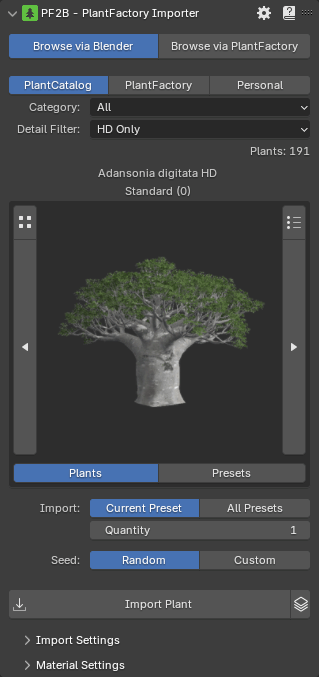
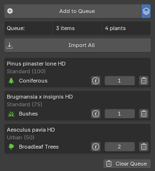
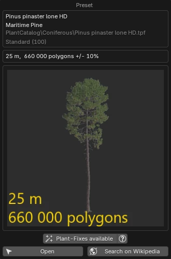
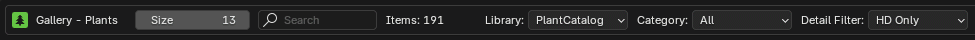
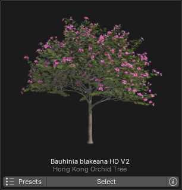
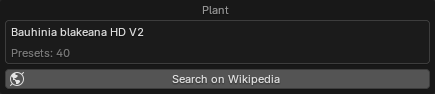
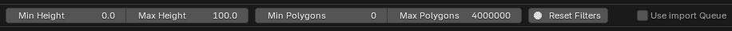
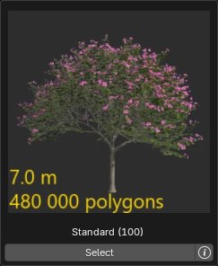
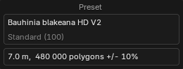
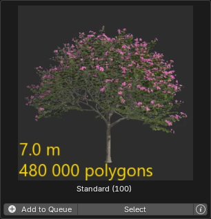

Browse via Blender¶

General Settings¶
- Library:
- PlantCatalog
- PlantFactory
- Personal: visible if enabled in the preferences.
- Category: Shows plant categories for the selected library.
- Detail Filter: Filter plant catalog items by detail level (Only available for the
PlantCataloglibrary).- All: Show all detail levels.
- FG Only: Show full geometry only.
- HD Only: Show high detail only.
- LD Only: Show low detail only.
- RT Only: Show real-time detail only.
- Plant Browser:
Above the thumbnail, the plant name is displayed (Adansonia digita HD), and below it, the preset name appears (Standard (0)).- : Opens the plant gallery, see gallery view below.
- : Opens the preset gallery, see gallery view below.
- : Navigates to the previous plant or preset.
- : Navigates to the next plant or preset
- Browse Mode: Plants or Presets.
- Import:
- Current Preset
- All Presets
- Quantity
- Seed:
- Random
- Custom
- Import Plant: Starts importing the selected plant(s).
- : Use import Queue, see the next section for details.
Queue¶
The queue system lets you add multiple plants to a queue, which you can then import in a single batch, simplifying the process of importing various species and presets.

-
: Opens a popup that displays information about the plant.

- Open: Open this plant in the Plant Browser.
- Search on Wikipedia: lets you search for the plant species on Wikipedia; hold down Shift while clicking to search on DuckDuckGo instead.
-
Quantity: The number field lets you specify how many of this plant will be imported.
- : Delete the plant from the queue.
- Clear Queue: Removes all plants from the queue.
{kind=link}
Gallery View¶
In this view, you can see all available plants and presets. To exit the gallery view, click the X in the top right corner or press Escape on your keyboard.
Plants
{kind=link}
Presets
{kind=link}
Below is a breakdown of every button and function inside the gallery.
Plants¶

{kind=link}
- Size: Adjusts the thumbnail size of the plants and presets in the gallery.
- Search: Lets you perform a free-text search to filter items.

If we look at an individual plant inside the gallery we have the following buttons below the thumbnail:
- Presets: Opens the presets gallery for this plant.
- Select: Selects the plant and closes down the plant gallery.
- : Opens a popup that displays information about the plant.

- Search on Wikipedia: lets you search for the plant species on Wikipedia; hold down Shift while clicking to search on DuckDuckGo instead.
Presets¶
PlantCatalog library there are additional filters available:
{kind=link}
- Min Height & Max Height: Lets you filter presets based on the plant height.
- Min Polygons & Max Polygons: Lets you filter presets based on the plant polygon count.
- Reset Filters
- Use import Queue: Enables the queue functionality and adds an additional 'Add to Queue' button to each preset. For more information about the queue system, please see the Queue section.
If we look at an individual presets inside the gallery we are presented with depending on if you have the Use import Queue active:

- Select: Selects the plant and closes down the plant gallery.
- : Opens a popup that displays information about the plant.

- Search on Wikipedia: lets you search for the plant species on Wikipedia; hold down Shift while clicking to search on DuckDuckGo instead.

- Add to Queue: Adds the preset to the queue. For more information about the queue system, please see the Queue section.
- Select: Selects the plant and closes down the plant gallery.
- : Opens a popup that displays information about the plant.
- Search on Wikipedia: lets you search for the plant species on Wikipedia; hold down Shift while clicking to search on DuckDuckGo instead.